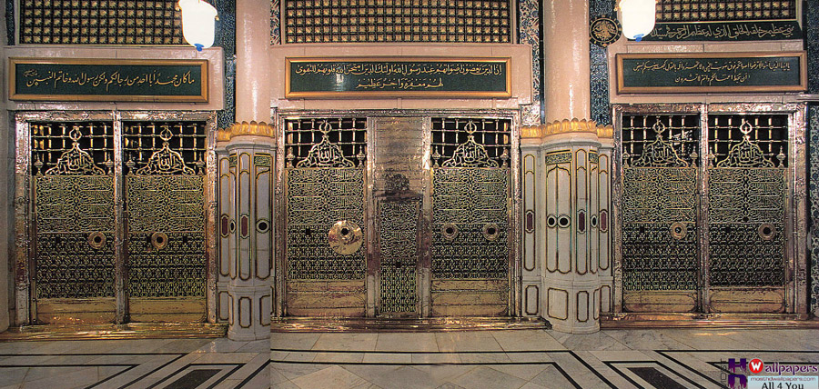
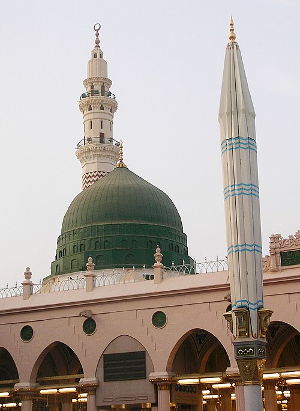
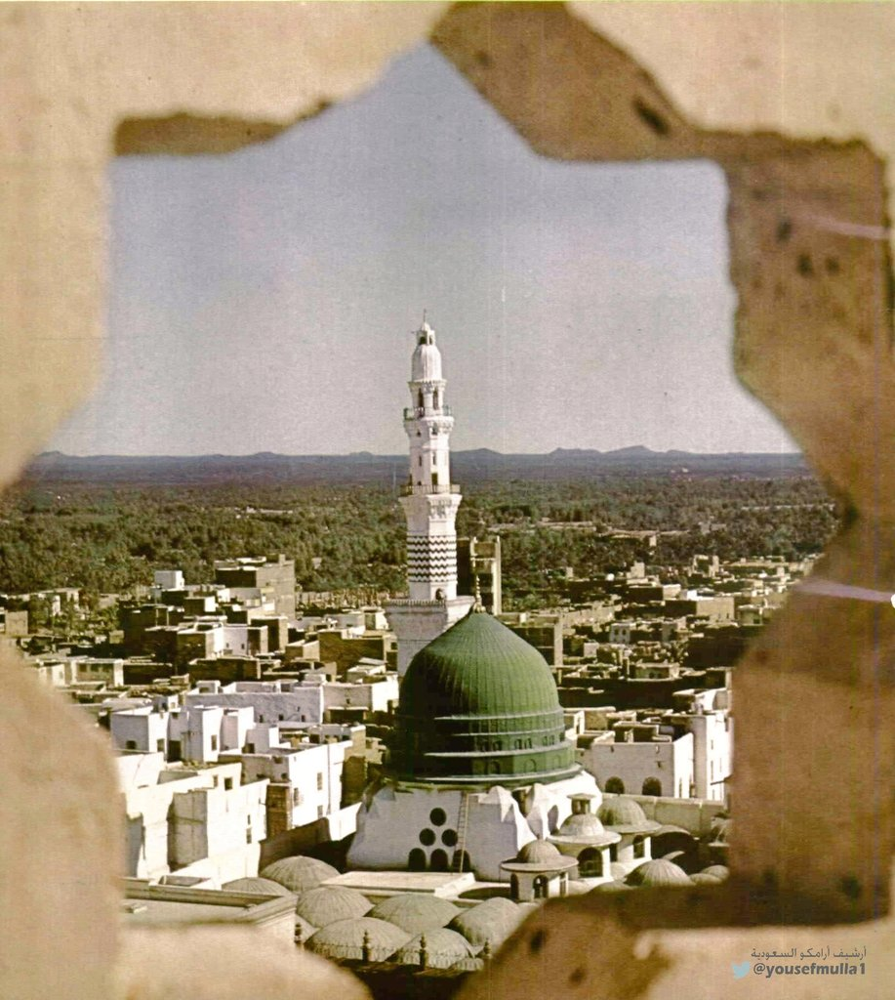

Al Maqam and some of his characteristics

The noble Maqam within Al-Masjid an-Nabawi. This is the sacred resting place of the Prophet ﷺ, where he lies buried next to his beloved companions, Sayyidna Abu Bakr and Sayyidna Umar (RadiAllahu Anhum).

His immense ﷺ compassion knew no bounds, extending even to his harshest adversaries. He famously taught his followers that those who show mercy to the creations on earth will be shown mercy by the Creator of the heavens.

Known as 'As-Sadiq' (The Truthful) and 'Al-Amin' (The Trustworthy) since his youth. His absolute honesty in business and daily life earned him the deep respect of everyone in Mecca.

He possessed unmatched patience and a deeply forgiving character. Despite facing years of harsh persecution and personal loss, he never sought revenge, choosing instead to forgive his harshest enemies and pray for their guidance.